The field of diagnostics is crucial for patient survival. To be able to diagnosis terminal disease’s such as cancer at earlier stages drastically increases the chance of survival. To do this we would need to know what signals to look for. This is where liquid biopsy is useful because it is a process where it can isolate biomarkers from the blood that have been known to correlate with different cancers. Previously I used logistic regression to look at a small subset of biomarkers and determine if they are good indicators of cancer. This time I am going to determine if the data set I am working with can be visually separated into cancer and healthy groups and what variables play the biggest role in determing cancer. On top of that, I am going to determine which factors play the biggest contribution to each specific cancer.
rm(list=ls())
library(cluster)## Warning: package 'cluster' was built under R version 4.1.3library(factoextra)## Warning: package 'factoextra' was built under R version 4.1.3## Loading required package: ggplot2## Welcome! Want to learn more? See two factoextra-related books at https://goo.gl/ve3WBalibrary(dplyr)##
## Attaching package: 'dplyr'## The following objects are masked from 'package:stats':
##
## filter, lag## The following objects are masked from 'package:base':
##
## intersect, setdiff, setequal, unionlibrary(ggfortify)
library(ggplot2)
library(caret)## Warning: package 'caret' was built under R version 4.1.3## Loading required package: latticelibrary(mlbench)## Warning: package 'mlbench' was built under R version 4.1.3library(vegan)## Loading required package: permute## This is vegan 2.5-7##
## Attaching package: 'vegan'## The following object is masked from 'package:caret':
##
## tolerancecancer = read.csv("MDT3.csv", header = T)
#cancer = cancer[c(-1,-2),-1] # getting rid of top 2 empty rows
# Making my first row into headers from an already existing dataframe in my environment
# names(cancer) <- as.matrix(cancer[1, ])
# cancer = cancer[-1, ]
# cancer[] <- lapply(cancer, function(x) type.convert(as.character(x)))
# cancer
#Removing Specific Columns that I am not interested in
# sub_cancer=cancer[ , -which(names(cancer) %in% c("Subject Cohort ID","Sample Type",
# "AJCC Stage", "A/B/C","T", "N", "M","Histopathology"))]
# Removing columns with all NA's in it
clean_cancer=cancer %>%
select(where(~!all(is.na(.))))
#Scaling my cancer data set and changing label of control to healthy
#clean_cancer = scale(clean_cancer)
clean_cancer$Cohort[clean_cancer$Cohort=="Control"] = "Healthy"
clean_cancer$Histopathology[clean_cancer$Histopathology==""] = "Healthy"
options(ggrepel.max.overlaps = Inf) # might help the knitting problemK-mediods cluster algorithm is very similar to K-means except that it treats one object (mediod) as the cluster instead of a calculating the distance from a centroid. Once it finds the mediod it performs a switch with all of the non-mediod points and calculates the dissimalarity of the two points. It iteratively repeats this process until it minimizes the dissimilarity between all points. The benefit to this is that it becomes more robust and less sensitive to the effects of outlier points.
biomarkers = na.omit(clean_cancer[, 12:53])
biomarkers = scale(biomarkers)
optimal_clusters=fviz_nbclust(biomarkers, FUNcluster = pam ,method="silhouette")
optimal=optimal_clusters +ggtitle("Optimal Clusters") +
theme(axis.text.x.bottom = element_text( size=12 ),
strip.text.x = element_text(size = 15, face = "bold"),
axis.title.x.bottom = element_text(size=16, face="bold"),
axis.text.y.left = element_text(size = 12),
axis.title.y.left = element_text(size = 16, face = "bold"),
plot.title = element_text(size = 18, face = "bold", hjust = 0.5),
legend.title = element_text(size = 13, face = "bold"),
legend.text = element_text(size = 12))
optimal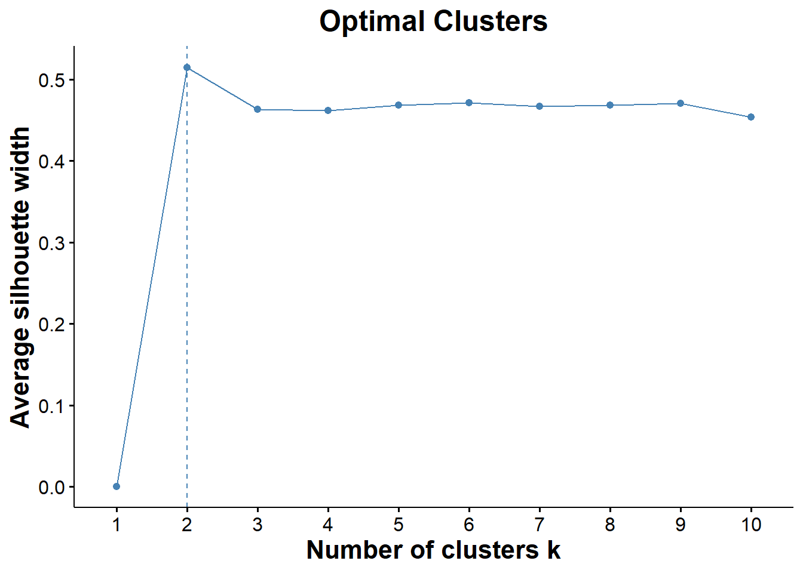
ggsave("optimal_cluster.png", optimal)## Saving 7 x 5 in image# fviz_nbclust is telling me that I have two optimal clusters which makes sense because it is probably clustering healthy samples together away from cancer samples
# silhouette is a measure of the distance between clusters (trying to find the optimal distance between clusters)set.seed(123)
# calculating PAM clusters
pam.res = pam(biomarkers, 2)
#print(pam.res)
pam_clust = cbind(na.omit(clean_cancer), cluster = pam.res$cluster) # have to do na.omit to make dimensions of df's match
clean_cancer$Cohort = as.factor(clean_cancer$Cohort)
biomarkers = as.matrix(biomarkers)
k_mediod=fviz_cluster(pam.res, data = na.omit(clean_cancer), geom = c("point"),
addEllipses=TRUE, ellipse.type='norm', repel = T )
kmed=k_mediod + ggtitle("K-mediod Clusters") +
theme_classic()+
theme(axis.text.x.bottom = element_text( size=12 ),
strip.text.x = element_text(size = 15, face = "bold"),
axis.title.x.bottom = element_text(size=16, face="bold"),
axis.text.y.left = element_text(size = 12),
axis.title.y.left = element_text(size = 16, face = "bold"),
plot.title = element_text(size = 18, face = "bold", hjust = 0.5),
legend.title = element_text(size = 13, face = "bold"),
legend.text = element_text(size = 12))
kmed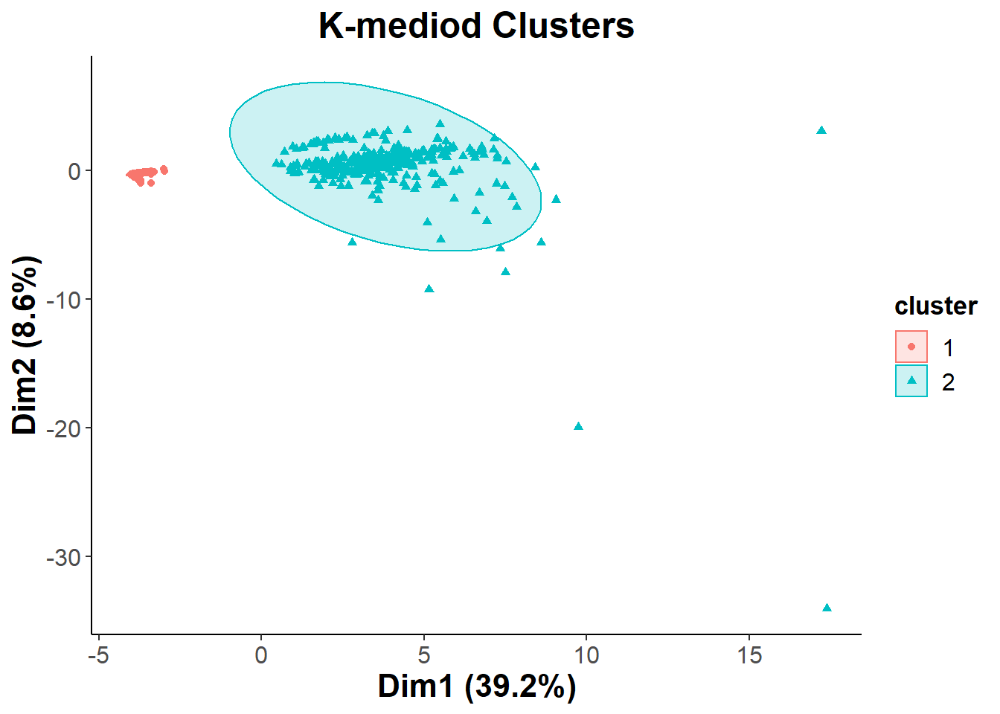
ggsave("k_mediod.png", kmed)## Saving 7 x 5 in imageTo determine the composition of the two clusters that we saw I decided to use a PCA biplot, with different colors representing the different types of cancer. This way we can hopefully determine if the two clusters are significant when it comes to separating the cohort based on having cancer or being healthy.
biomarkers.pca = prcomp(na.omit(biomarkers), center = T, scale. = T )
cohort = fviz_pca_biplot(biomarkers.pca, col.ind = (clean_cancer$Cohort[-647])
# last cell was empty and it was messing with my legend
,geom = c("point"), geom.var = "point",addEllipses=TRUE,
mean.point=TRUE, ellipse.type='norm', repel = T )
cohort_final=cohort + theme_classic() + ggtitle("PCA of Cohort") +
theme(axis.text.x.bottom = element_text( size=12 ),
strip.text.x = element_text(size = 15, face = "bold"),
axis.title.x.bottom = element_text(size=16, face="bold"),
axis.text.y.left = element_text(size = 12),
axis.title.y.left = element_text(size = 16, face = "bold"),
plot.title = element_text(size = 18, face = "bold", hjust = 0.5),
legend.title = element_text(size = 13, face = "bold"),
legend.text = element_text(size = 12))
cohort_final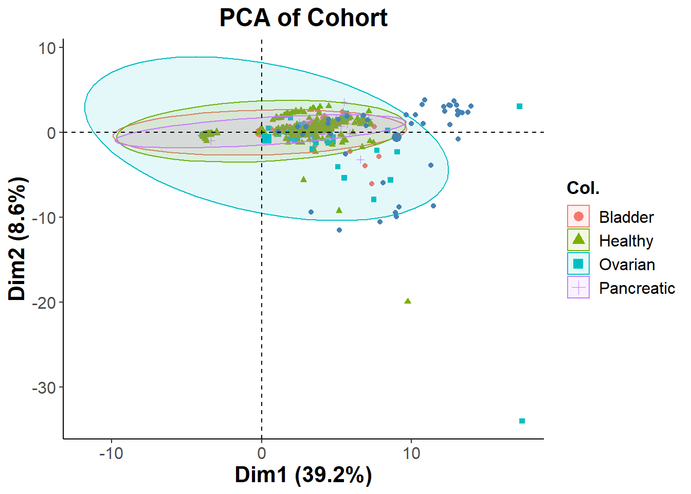
ggsave("cohort.png", cohort_final)## Saving 7 x 5 in image# wanted to see if it was gender clustering
gender = fviz_pca_biplot(biomarkers.pca, col.ind = (clean_cancer$Sex[-647])
,geom = c("point"), geom.var = "point",addEllipses=TRUE,
mean.point=TRUE, ellipse.type='norm', repel = T )
gender + theme_classic() + ggtitle("PCA of Gender") +
theme(axis.text.x.bottom = element_text( size=12 ),
strip.text.x = element_text(size = 15, face = "bold"),
axis.title.x.bottom = element_text(size=16, face="bold"),
axis.text.y.left = element_text(size = 12),
axis.title.y.left = element_text(size = 16, face = "bold"),
plot.title = element_text(size = 18, face = "bold", hjust = 0.5),
legend.title = element_text(size = 13, face = "bold"),
legend.text = element_text(size = 12)) 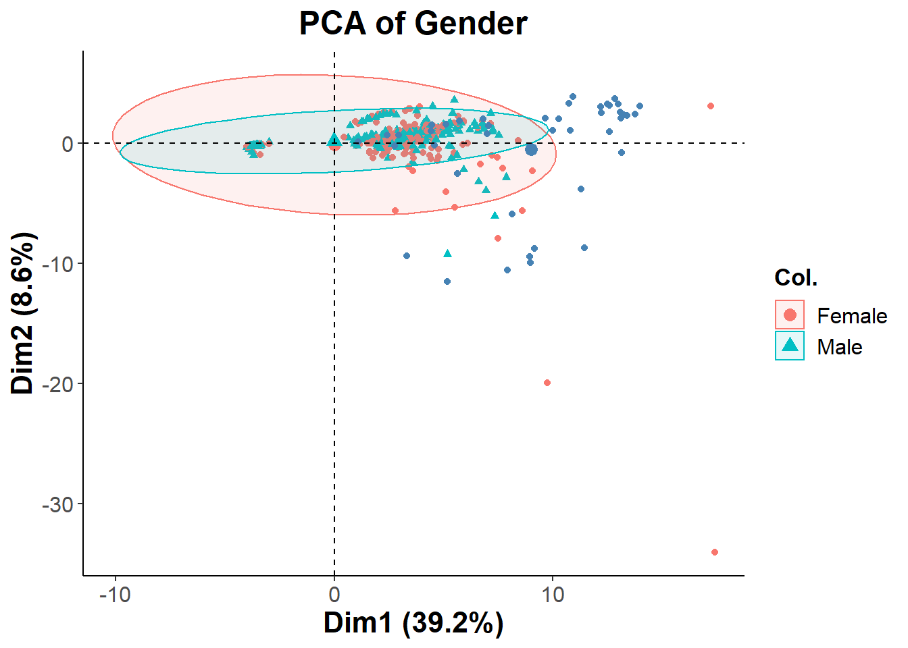
The PCA is showing that the two distinct clusters shown previously have all different types of healthy and cancer patients mixed into it. This could possibly be due to having too many biomarkers in the analysis. I will Repeating the process with a more filtered set of features. Since the clusters were not separated by cancer type, I decided to see if they were separated by gender. Looking at the second PCA biplot we can see that this is not the case
summary(biomarkers.pca)## Importance of components:
## PC1 PC2 PC3 PC4 PC5 PC6 PC7
## Standard deviation 4.0583 1.90503 1.68355 1.28933 1.17629 1.16158 1.13327
## Proportion of Variance 0.3921 0.08641 0.06748 0.03958 0.03294 0.03213 0.03058
## Cumulative Proportion 0.3921 0.47855 0.54603 0.58561 0.61856 0.65068 0.68126
## PC8 PC9 PC10 PC11 PC12 PC13 PC14
## Standard deviation 1.06736 1.0491 1.00997 0.9935 0.96618 0.88294 0.84605
## Proportion of Variance 0.02713 0.0262 0.02429 0.0235 0.02223 0.01856 0.01704
## Cumulative Proportion 0.70838 0.7346 0.75888 0.7824 0.80460 0.82316 0.84021
## PC15 PC16 PC17 PC18 PC19 PC20 PC21
## Standard deviation 0.81134 0.7885 0.73990 0.68652 0.63571 0.6114 0.59192
## Proportion of Variance 0.01567 0.0148 0.01303 0.01122 0.00962 0.0089 0.00834
## Cumulative Proportion 0.85588 0.8707 0.88372 0.89494 0.90456 0.9135 0.92180
## PC22 PC23 PC24 PC25 PC26 PC27 PC28
## Standard deviation 0.57423 0.5265 0.51966 0.5101 0.47831 0.46021 0.44928
## Proportion of Variance 0.00785 0.0066 0.00643 0.0062 0.00545 0.00504 0.00481
## Cumulative Proportion 0.92966 0.9363 0.94268 0.9489 0.95433 0.95937 0.96418
## PC29 PC30 PC31 PC32 PC33 PC34 PC35
## Standard deviation 0.42737 0.41249 0.40065 0.39452 0.37724 0.34778 0.32840
## Proportion of Variance 0.00435 0.00405 0.00382 0.00371 0.00339 0.00288 0.00257
## Cumulative Proportion 0.96853 0.97258 0.97640 0.98010 0.98349 0.98637 0.98894
## PC36 PC37 PC38 PC39 PC40 PC41 PC42
## Standard deviation 0.30703 0.30012 0.27984 0.26091 0.24951 0.21416 0.16022
## Proportion of Variance 0.00224 0.00214 0.00186 0.00162 0.00148 0.00109 0.00061
## Cumulative Proportion 0.99118 0.99333 0.99519 0.99681 0.99830 0.99939 1.00000#calculate total variance explained by each principal component
var_explained = biomarkers.pca$sdev^2 / sum(biomarkers.pca$sdev^2)
#create scree plot to see which Principal components I should use
scree=qplot(c(1:42), var_explained) +
geom_line() +
geom_point(size = 3) +
theme_classic()+
theme(axis.text.x.bottom = element_text( size=12 ),
strip.text.x = element_text(size = 15, face = "bold"),
axis.title.x.bottom = element_text(size=16, face="bold"),
axis.text.y.left = element_text(size = 12),
axis.title.y.left = element_text(size = 16, face = "bold"),
plot.title = element_text(size = 18, face = "bold", hjust = 0.5)) +
xlab("Principal Component") +
ylab("Variance Explained") +
ggtitle("Scree Plot") +
ylim(0, 0.4)
scree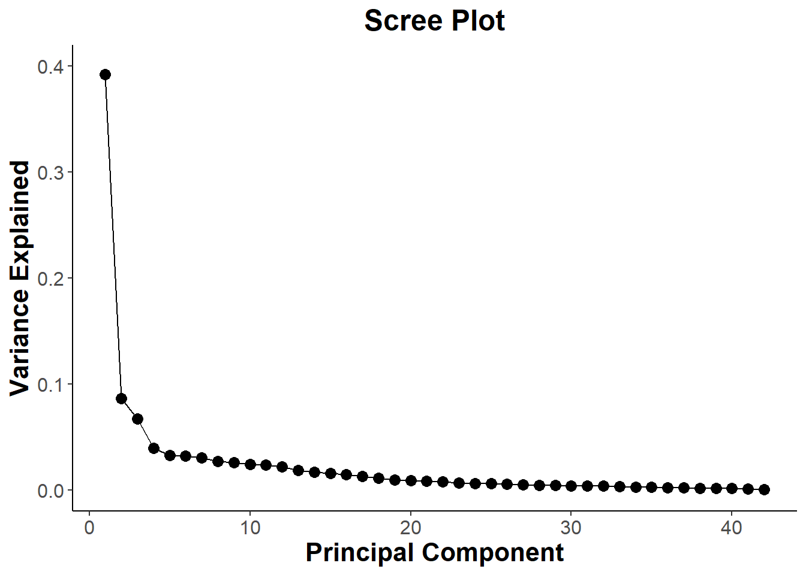
ggsave("scree.png", scree)## Saving 7 x 5 in image# Contributions from PC1
PC1_contribution = fviz_contrib(biomarkers.pca, choice = "var", axes =1 , top = 21)
PC1_contribution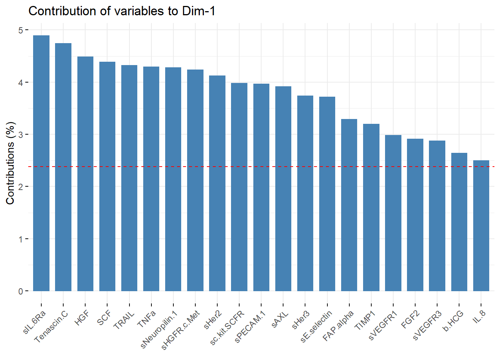
PC1_list_of_vars = PC1_contribution[["layers"]][[1]][["data"]][["name"]]
# list of variables are inside PC_contribuition object
#Contributions from PC2
PC2_contribution = fviz_contrib(biomarkers.pca, choice = "var", axes =2 , top = 8)
PC2_contribution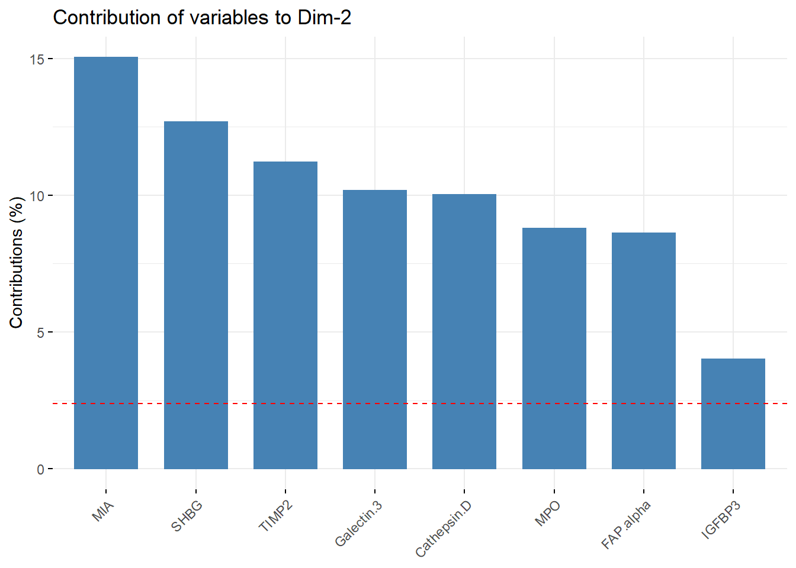
PC2_list_of_vars = PC2_contribution[["layers"]][[1]][["data"]][["name"]]
#Contributions from PC3
PC3_contribution = fviz_contrib(biomarkers.pca, choice = "var", axes =3 , top = 9)
PC3_contribution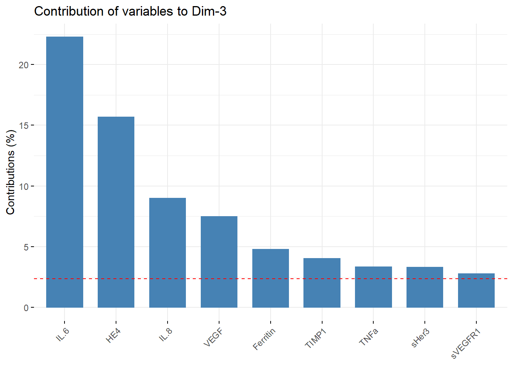
PC3_list_of_vars = PC3_contribution[["layers"]][[1]][["data"]][["name"]]
#Combining variables
pc1_pc2 = setdiff(PC2_list_of_vars, PC1_list_of_vars)
pc1_pc3 = setdiff(PC3_list_of_vars, PC1_list_of_vars)
pc1_pc2# I am going to just combine pc1 and pc2 list ## [1] "MIA" "SHBG" "TIMP2" "Galectin.3" "Cathepsin.D"
## [6] "MPO" "IGFBP3"pc1_pc3## [1] "IL.6" "HE4" "VEGF" "Ferritin"filtered_list = c(PC1_list_of_vars,PC2_list_of_vars,PC3_list_of_vars)
filtered_list## [1] sIL.6Ra Tenascin.C HGF SCF TRAIL
## [6] TNFa sNeuropilin.1 sHGFR.c.Met sHer2 sc.kit.SCFR
## [11] sPECAM.1 sAXL sHer3 sE.selectin FAP.alpha
## [16] TIMP1 sVEGFR1 FGF2 sVEGFR3 b.HCG
## [21] IL.8 MIA SHBG TIMP2 Galectin.3
## [26] Cathepsin.D MPO FAP.alpha IGFBP3 IL.6
## [31] HE4 IL.8 VEGF Ferritin TIMP1
## [36] TNFa sHer3 sVEGFR1
## 32 Levels: sIL.6Ra Tenascin.C HGF SCF TRAIL TNFa sNeuropilin.1 ... Ferritin#Creating a more filtered data set for PCA
new_cancer = clean_cancer[filtered_list]
#new_cancer
# Creating new marix for pca
new_biomarkers = scale(as.matrix(new_cancer[,12:29]), center = T, scale = T)
#new_biomarkersTo reduce the amount of “noise” in my data set, I decided to reduce the number of variables in my analysis To do this I took the most important features from PC1, PC2, and PC3 and used those to create a new filtered data set. The new filtered data contained only 32 biomarkers instead of 42.
new_biomarkers.pca = prcomp(na.omit(new_biomarkers), center = F, scale. = F )
filtered_cohort = fviz_pca_biplot(new_biomarkers.pca, col.ind = (clean_cancer$Cohort[-647])
,geom = c("point"), geom.var = "point",addEllipses=TRUE,
mean.point=TRUE, ellipse.type='norm', repel = T )
pca_cohort=filtered_cohort + theme_classic() + ggtitle("PCA of PC Contribution") +
theme(axis.text.x.bottom = element_text( size=12 ),
strip.text.x = element_text(size = 15, face = "bold"),
axis.title.x.bottom = element_text(size=16, face="bold"),
axis.text.y.left = element_text(size = 12),
axis.title.y.left = element_text(size = 16, face = "bold"),
plot.title = element_text(size = 18, face = "bold", hjust = 0.5),
legend.title = element_text(size = 13, face = "bold"),
legend.text = element_text(size = 12))
pca_cohort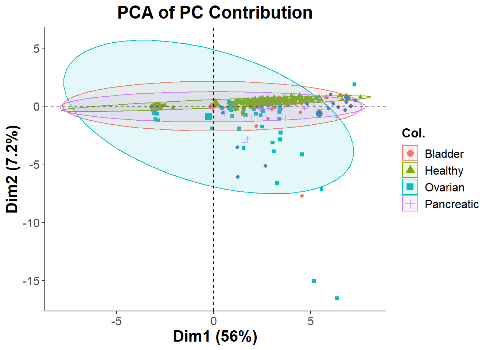
ggsave("pca_cohort.png", pca_cohort)## Saving 7 x 5 in imageSince filtering features based on Principle Component contribution was did not give us the cluster separation that I was looking for, I will resort to using Recursive Feature Elimination (RFE) and then use NMDS to visualize the clusters.
library(randomForest)## Warning: package 'randomForest' was built under R version 4.1.3## randomForest 4.7-1## Type rfNews() to see new features/changes/bug fixes.##
## Attaching package: 'randomForest'## The following object is masked from 'package:dplyr':
##
## combine## The following object is masked from 'package:ggplot2':
##
## marginclean_cancer$Cohort = as.factor(clean_cancer$Cohort)
set.seed(123) # for reproducibility
# define the control using a random forest selection function
control = rfeControl(functions=rfFuncs, method="cv", number=10)
# run the RFE algorithm
results = rfe(clean_cancer[,12:53], clean_cancer[,3], sizes=c(1:50), rfeControl=control)
# summarize the results
#print(results)
# list the chosen features
predictors(results)## [1] "CA.125" "CA.19.9" "Prolactin" "Ferritin" "Total.PSA" "OPN"
## [7] "sHer2" "MIF" "sVEGFR1" "Leptin" "FGF2"# plot the results
plot(results, type=c("g", "o"))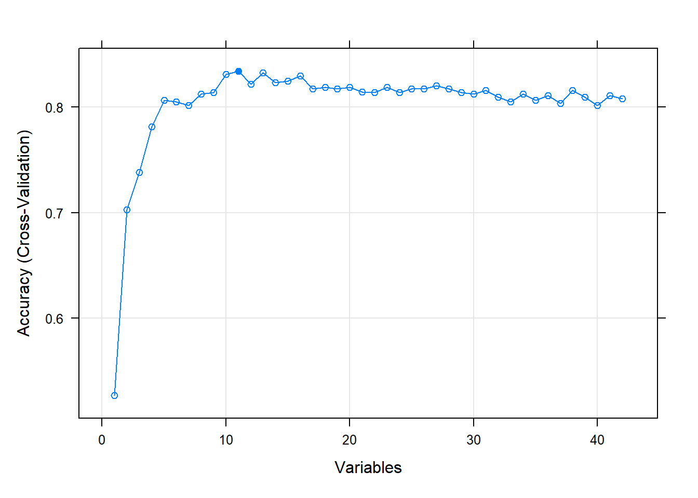
RFE runs a random forest algorithm on the features and target that I give it. During the RFE process it cross validates the accuracy of the predictions for a range of variables that I feed it. Here we see that RFE starts at making predictions with only 1 variable and then keeps on going until it starts making predictions with all of my variables as features. My CV plot is showing that we reach an optimum in accuracy with 11 biomarkers. I will now filter my existing data set with only these features.
# creating numeric matrix
predictions = predictors(results)
filtered_cancer_data = clean_cancer[predictions]
#making distance matrix
cancer.nmds = metaMDS(filtered_cancer_data, dist = "euclidean", k=2, trace = 0)
#plotting ordiplot
pl=ordiplot(cancer.nmds, type='none',
main = paste0('Stress = ',round(cancer.nmds$stress,dig=3)), las = 1)
points(pl, what = 'sites',col="black", bg =(clean_cancer$Cohort), pch=c(21))
#ordiellipse(cancer.nmds, kind='ehull', draw = 'polygon',groups=clean_cancer$Cohort,label=F)
legend('topleft',legend=levels(clean_cancer$Cohort),
col=seq_along(levels(clean_cancer$Cohort)), # need to use seq_along argument to have
pch = 20, cex = 0.8, title = 'Cancer Type')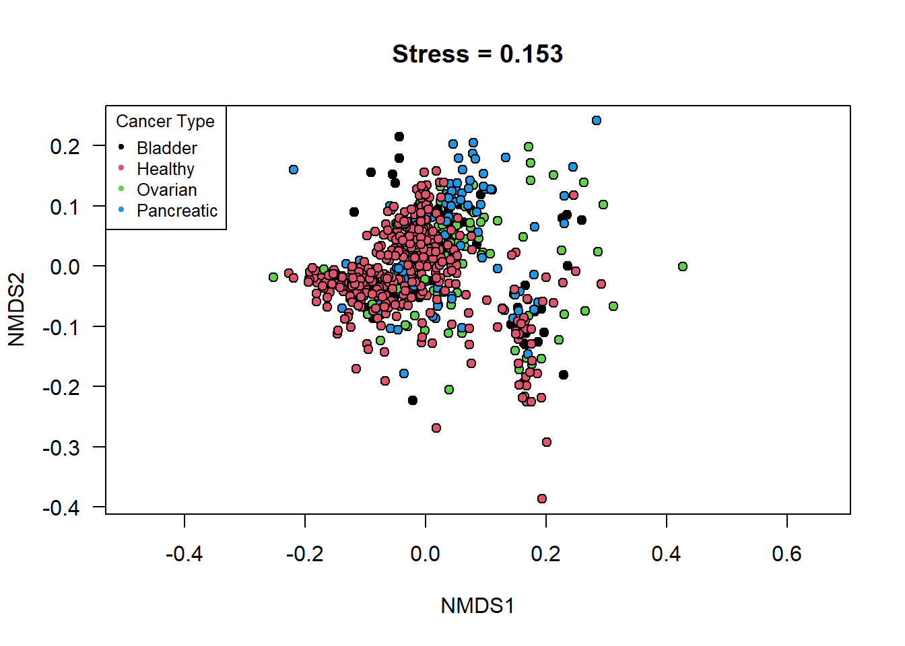 Once the features were selected I decided to visualize the differences between the cancer types by using both a NMDS plot and a PCA biplot.The reasoning behind plotting the data using NMDS was to see if I could find any non-specific orientation of the data that might lead to a separation between the groups in the cohort. Look at the NMDS plot, it does not show any significant differences in clustering between the 4 groups, even with the newly filtered data table.
cancer.pca = prcomp(filtered_cancer_data, scale. = T, center=T)
RF = autoplot(cancer.pca, data = clean_cancer, colour = 'Cohort', loadings=F, size = 3,
loadings.label = T, loadings.label.size=4.5, expand = 6.5,loadings.label.repel=T )
RF + ggtitle("PCA of RFE_markers") + theme_classic() +
theme(axis.text.x.bottom = element_text( size=12 ),
strip.text.x = element_text(size = 15, face = "bold"),
axis.title.x.bottom = element_text(size=16, face="bold"),
axis.text.y.left = element_text(size = 12),
axis.title.y.left = element_text(size = 16, face = "bold"),
plot.title = element_text(size = 18, face = "bold", hjust = 0.5),
legend.title = element_text(size = 13, face = "bold"),
legend.text = element_text(size = 12))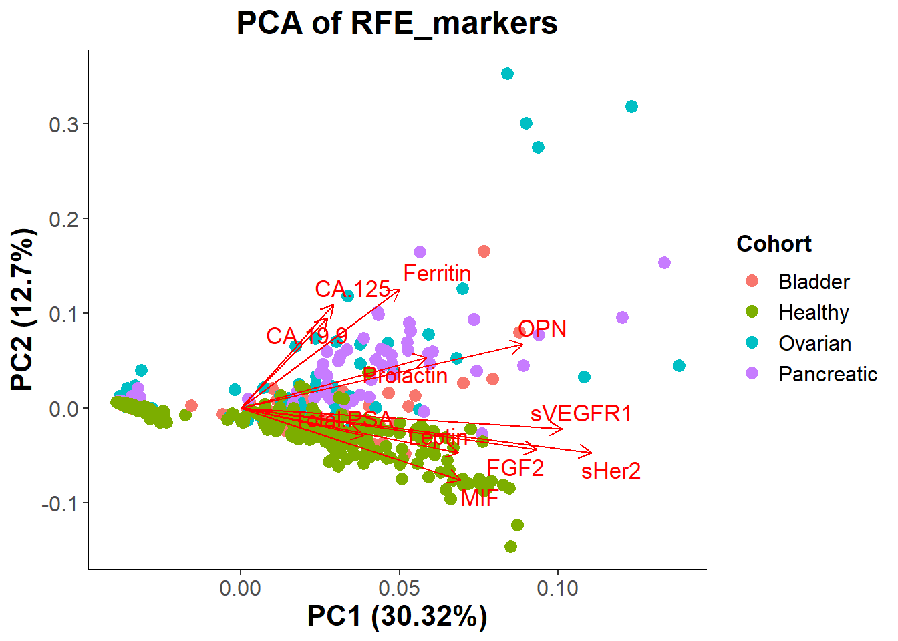 # Conclusion: Fortunately looking at the new PCA biplot we do see more separation between the groups. There still seems to be a lot of overlap between all groups, but it seems to be easier to differentiate which biomarkers play a more significant role in determining if a patient has cancer or if they are healthy. Looking at the graph we see CA19-9, CA125, OPN, Prolactin, and Ferritin seem to signal for cancer, while MIF, FGF2, Total.PSA, Leptin, and maybe (sVEGFR1, and sHer2) correlate with patients being healthy.